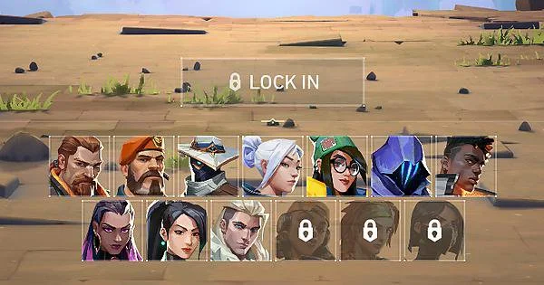
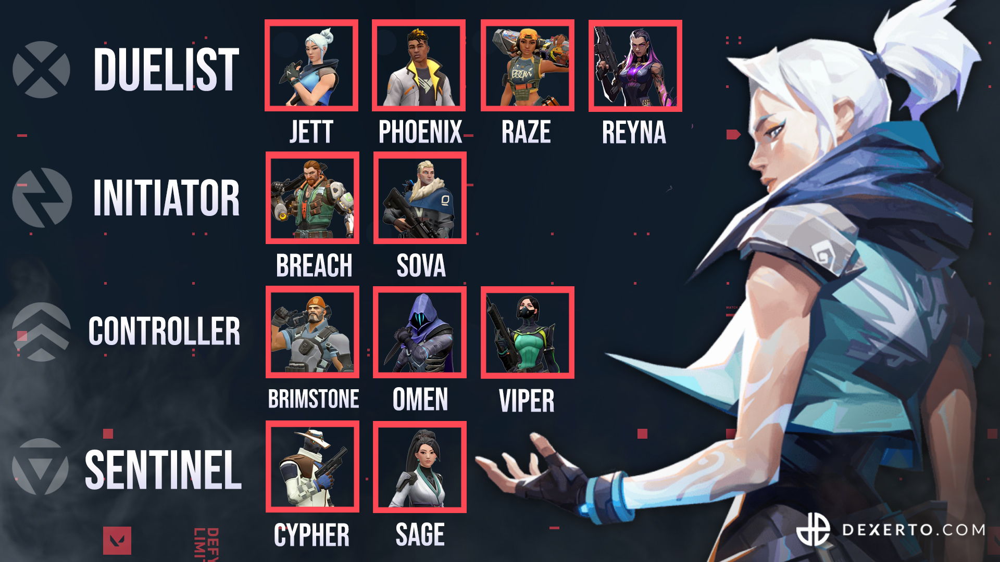
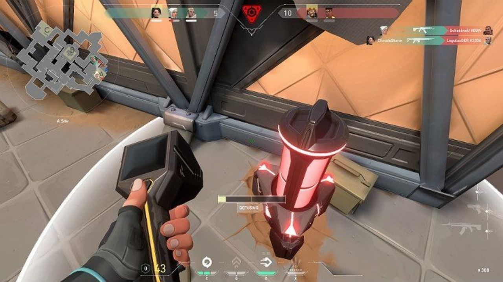

Valorant is a team-based tactical shooter. In Valorant there is a main objective and you are given a team of 5 consisting of 5 unique agents with unique abilities and utility.
Valorant agents come in many different shapes and sizes with different abilities and purposes. Once you load into a game you are put into an agent select screen where you and your team can create a good team composition using all the different agent types and what suits the objective and map.
Valorant agents have 4 specific types or classes, Initiator, Duelist, Controller, and Sentinel. They're all made for differnet purposes. Initiators are made to gather information like locations of enemies or delay enemies. Sentinels are defense orientated characters. Controllers are made to block line of sights using smoke screens. Duelists are made to push the objectives and create space for their team.
In valorant there is 2 teams, the attackers and defenders. The attackers job is to take the site and plant the spike, and explosive which goes off ending in an attacker win in 45 seconds. The defenders must stop the attackers from taking site and if they do the defenders must defuse the spike.